Jay and HikaruJay と Hikaru
Osaka, November 10 to 20大阪の旅 11月10日〜20日
Wedding, family meeting, Kyoto day and a lot of ramen. Every blue link opens Google Maps or the booking.結婚式、顔合わせ、京都の日、そしてラーメン。青いリンクはGoogleマップや予約ページが開きます。
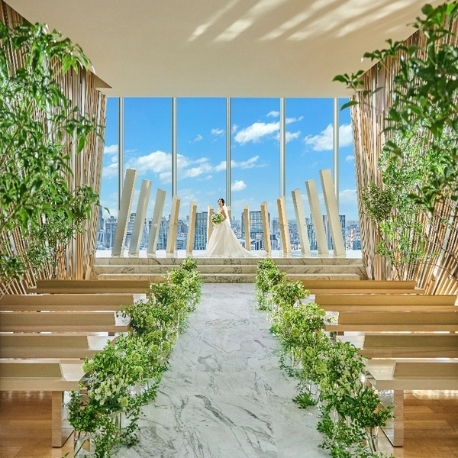
The wedding venue, 33rd floor結婚式場(33階)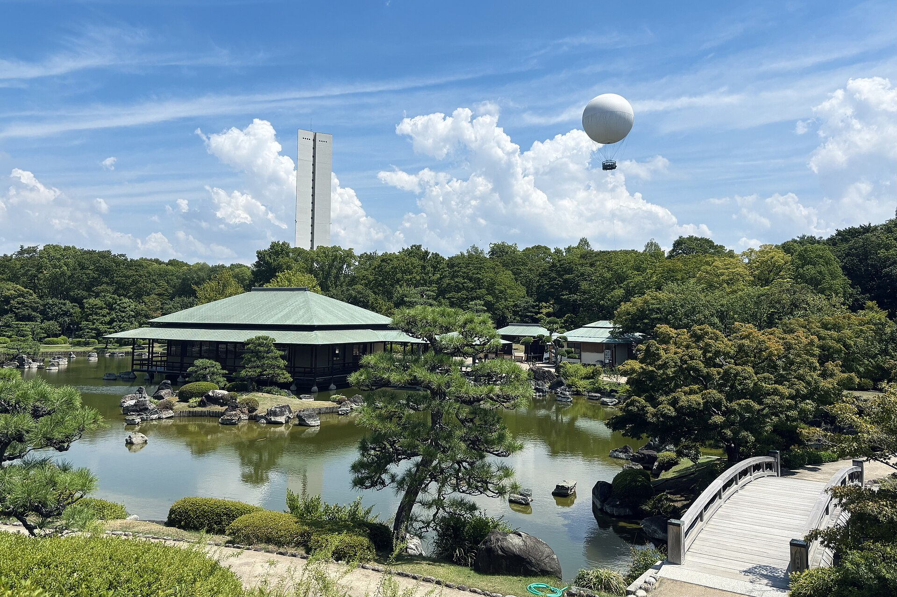
Daisen Park Japanese Garden大仙公園 日本庭園IMPORTANT重要
- Sat Nov 14: Be at the wedding by 4:20 PM. Suit and tie.11/14(土): 16:20までに結婚式場へ。スーツとネクタイ。
- Mon Nov 16: Meet at Kagaen at 8:45 AM. Lunch is a hard stop at 3:00 PM.11/16(月): 8:45に華雅苑へ集合。ランチは15:00で必ず終了。
- Fri Nov 20: Fly from Itami (ITM), not Kansai. Be there by 4:50 PM.11/20(金): 関空ではなく伊丹(ITM)から出発。16:50までに到着。
- Passport: in your carry-on, not your checked bag.パスポート: 預け荷物ではなく手荷物に。
| Day日付 | What予定 | Where we sleep宿泊先 |
|---|
| Tue Nov 1011/10(火) | Fly LAX to SFO to Kansai (leave home 3:45 AM). Jay's parents are already in Japan (times to add)LA→SF→関空へ(自宅出発 3:45)。Jay のご両親は先に日本に到着済み(時間は追記予定) | On the plane機内 |
| Wed Nov 1111/11(水) | Land 4:45 PM, train to Stay 116:45 関空着、電車で宿1へ | Stay 1宿1 |
| Thu Nov 1211/12(木) | Free day自由に過ごす日 | Stay 1宿1 |
| Fri Nov 1311/13(金) | Free day, last clear day before the wedding自由に過ごす日(結婚式前の最後の日) | Stay 1宿1 |
| Sat Nov 1411/14(土) | Brandon and Koko's weddingBrandon と Koko の結婚式 | Stay 1宿1 |
| Sun Nov 1511/15(日) | Hikaru's parents arrive. Optional lunch with BrandonHikaruのご両親が到着。Brandonとのランチは参加自由 | Stay 1宿1 |
| Mon Nov 1611/16(月) | Family meeting (顔合わせ)顔合わせ, garden photos, lunch、庭園で撮影、ランチ | Stay 1宿1 |
| Tue Nov 1711/17(火) | Check out, Kyoto day, move to Stay 2チェックアウト、京都、宿2へ移動 | Stay 2宿2 |
| Wed Nov 1811/18(水) | Free day自由に過ごす日 | Stay 2宿2 |
| Thu Nov 1911/19(木) | Free day, last full day. Jay's parents fly home about now (times to add)自由に過ごす日(最後の丸一日)。Jay のご両親はこの頃帰国(時間は追記予定) | Stay 2宿2 |
| Fri Nov 2011/20(金) | Check out 11 AM, fly home from Itami11:00チェックアウト、伊丹から帰国 | Home自宅 |
Do not leave without these出発前に必ず確認
Don't forget list忘れ物チェックリスト
DOCUMENTS書類
- Passport. Valid for the whole trip. Photo of the photo page saved in your phone (Japanese stays ask foreign guests for a passport copy).パスポート。滞在期間中ずっと有効なもの。顔写真ページの写真をスマホに保存(日本の宿泊施設では、外国人宿泊者にパスポートのコピーを求められます)。
- Visit Japan Web (free, official). Do it before you land, save the QR code as a screenshot. OpenVisit Japan Web(無料・公式)。到着前に登録し、QRコードをスクリーンショット。開く
- ANA booking DVRT6W. E-ticket saved offline, ANA app installed, online check-in done for every leg.ANA予約番号 DVRT6W。eチケットをオフライン保存、ANAアプリを入れ、全区間オンラインチェックイン。
- Both Airbnbs saved offline: door codes and addresses as screenshots (smart lock at Stay 1, lockbox at Stay 2).Airbnb 2件をオフライン保存:ドアの暗証番号と住所をスクリーンショット(宿1はスマートロック、宿2はキーボックス)。
Money and phoneお金とスマホ
- Yen cash. Many small places, coin lockers and the garden (¥200) are cash only.円の現金。小さなお店、コインロッカー、庭園(200円)は現金のみのことが多い。
- Cards with no foreign fee. Tell your bank you are travelling.海外手数料のないカード。銀行に渡航を連絡。
- Train card (Suica or ICOCA) or phone wallet version.交通系ICカード(SuicaまたはICOCA)かスマホ版。
- Phone data: eSIM or pocket Wi-Fi sorted. Offline Google Map of Osaka.スマホの通信: eSIMかポケットWi-Fi。大阪のオフラインマップ。
- Chargers and a power bank (power bank in carry-on only). US plugs fit in Japan.充電器とモバイルバッテリー(バッテリーは機内持込のみ)。日本の電源プラグは米国と同じ形。
Wedding and family結婚式と顔合わせ
- Suit, tie, dress shoes. Press it Fri Nov 13. Hikaru: cocktail or evening dress.スーツ、ネクタイ、革靴。11/13にプレス。Hikaru はカクテルドレスかイブニングドレス。
- Tell Choutsugai: no oysters for the table.ちょうつがひに「牡蠣なし」を連絡。
- Outfit for the Nov 16 photos: ask Hikaru what the salon provides.11/16の撮影用の服: サロンで用意されるか Hikaru に確認。
- Small gifts for Hikaru's parents: ask Hikaru what is expected.Hikaruのご両親への手土産: 何が必要か Hikaru に確認。
- Coin purse for lockers. Small umbrella. Layers (Nov is about 8 to 18°C).ロッカー用の小銭入れ。折りたたみ傘。重ね着(11月は約8〜18°C)。
Health健康
- Medicine in original bottles. Some US medicines are restricted in Japan, so check yours first.薬は元のボトルのまま。米国の薬には日本で規制されているものがあるので事前に確認。
- Travel insurance.旅行保険。
At home自宅
- Ride to LAX for 4:30 AM Tue Nov 10 (leave 3:45).11/10(火)4:30にLAXへ着けるよう送迎を手配(自宅は3:45出発)。
- Ride home from LAX, landing 2:05 PM Fri Nov 20.11/20(金)14:05 LAX着後の帰りの足。
- House, mail and work covered while away.留守中の家、郵便、仕事の手配。
FLIGHT DAYSフライトの日
- Tue Nov 10, SFO: move to the International Terminal (2.5 hr gap). Ask at LAX if your bags go through to Osaka.11/10 SFO:国際線ターミナルへ移動(乗継2時間30分)。荷物を大阪まで通しで預けられるか LAX で確認。
- Fri Nov 20: Itami to Haneda is a domestic flight, then you leave Japan from Haneda. Ask ANA at Itami whether your bags go through to LAX, and check the Haneda terminal in the ANA app.11/20:伊丹→羽田は国内線、その後羽田から出国。荷物をLAXまで通しで預けられるか伊丹のANAカウンターで確認し、羽田のターミナルはANAアプリで確認。
STILL TO CONFIRM未確認
- Jay's parents arrive before Jay (before Nov 11) and fly home about a day before him (around Nov 19). Their flight times and hotel are not on this page yet.Jay のご両親は Jay より先に日本へ到着(11/11より前)し、Jay の1日ほど前(11/19頃)に帰国。フライト時間と宿はまだこのページにありません。
- Kyoto day plan and the Saturday afterparty are not set.京都の日の計画と土曜の二次会は未定。
10TUE火
Travel day: LA to Osaka移動日: LAから大阪へ
Then Wed Nov 11: land and settle in11/11(水): 到着して宿へ
Tue Nov 1011/10(火)
- 3:45 AM3:45 Leave home自宅出発
- 4:30 AM4:30 At LAX Terminal 7LAX ターミナル7着
- 7:25 AM7:25 NH7355 LAX to SFO (United-operated), lands 8:55NH7355 LAX→SFO(ユナイテッド運航)、8:55着
- 11:25 AM11:25 NH7071 SFO to Kansai, 12 hr 20 minNH7071 SFO→関空、12時間20分
IMPORTANT重要- At SFO, move to the International Terminal (2.5 hr gap).SFOでは国際線ターミナルへ移動(乗継2時間30分)。
- ANA booking code DVRT6W.ANA予約番号 DVRT6W。
Wed Nov 1111/11(水)
- 4:45 PM16:45 Land at Kansai (KIX)関西空港(KIX)着
- After bags荷物を受け取った後 Train to Stay 1: about 1 hr 5 min to 1 hr 25 min電車で宿1へ: 約1時間5分〜1時間25分
- ~6:30 PM18:30頃 Check in. Smart lock, open from 3 PMチェックイン。スマートロック、15:00から可
GOOD TO KNOWポイント- Fare about ¥1,260 to ¥1,960 ($8 to $12).運賃は約1,260〜1,960円(8〜12ドル)。
- Nankai Airport Line, then Sakaisuji Line.南海空港線、続いて堺筋線。
1STAY宿
Stay 1: Minn Umeda Nakazakicho宿1: Minn 梅田中崎町
Nov 11 to 17, check out by 10:00 AM11/11〜17、チェックアウト 10:00まで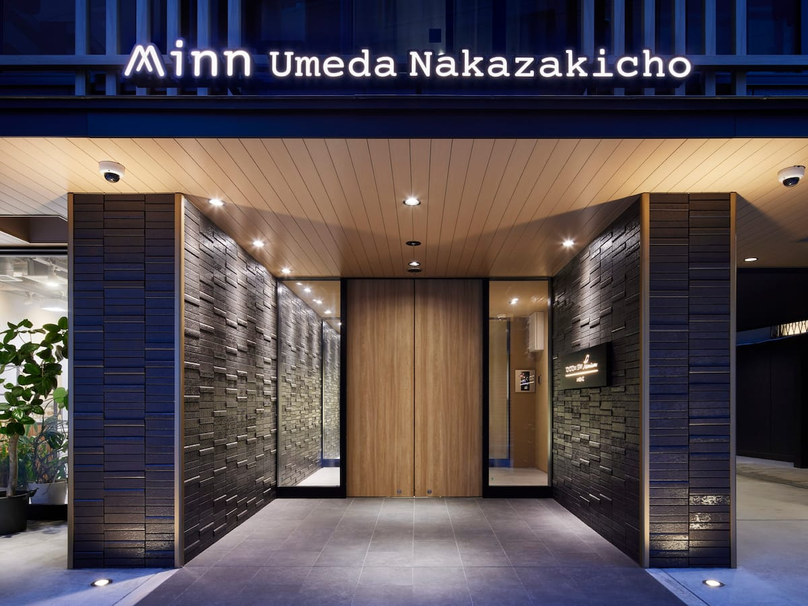
Entranceエントランス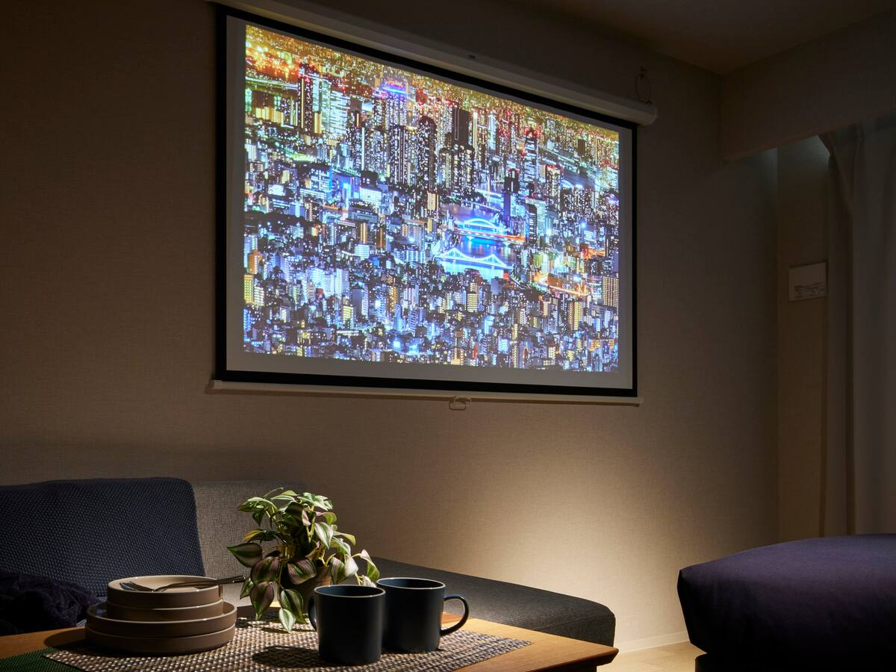
Living areaリビング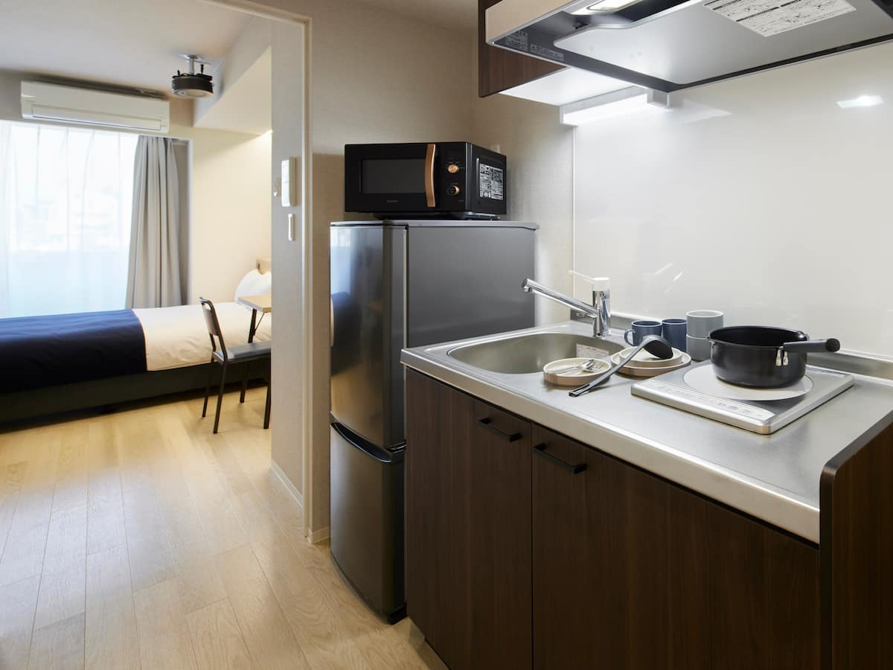
Kitchen and bedキッチンとベッド
- 1-chome-5-13 Ukida, Kita Ward, Osaka 530-0021大阪市北区浮田1-5-13 〒530-0021
- 6 min walk from Nakazakicho Station (Tanimachi Line)中崎町駅(谷町線)から徒歩6分
- Confirmation HMYAJC4325確認コード HMYAJC4325
12THU木
Nov 12 and 13: free days11/12・13: 自由に過ごす日
Nothing booked. Rest, eat, explore Umeda.予定なし。休んで、食べて、梅田を散策。GOOD TO KNOWポイント- Nov 13 is the last clear day before the wedding. Get the suit pressed.11/13は結婚式前の最後の日。スーツをプレス。
14SAT土
Brandon and Koko's weddingBrandon と Koko の結婚式
The 33 Sense of Wedding, 33rd floor, Breeze BreezeThe 33 Sense of Wedding、ブリーゼブリーゼ33階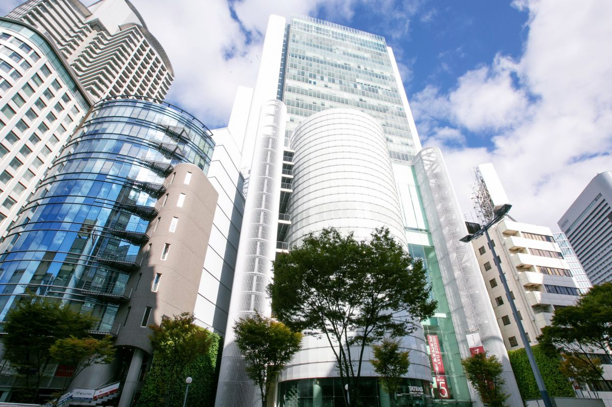
Breeze Breeze towerブリーゼタワーThe chapelチャペル
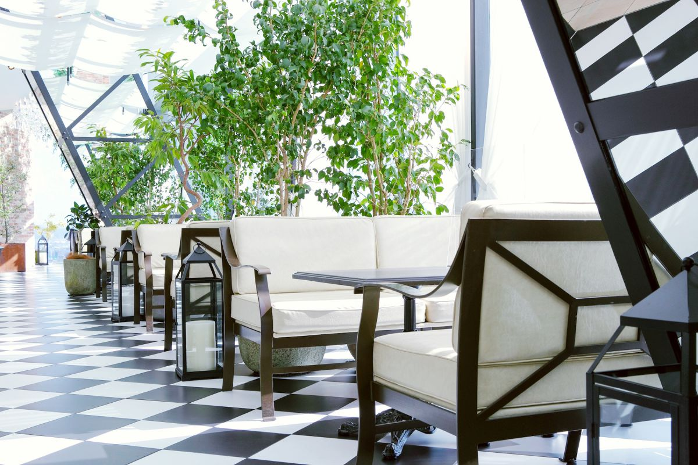
Sky terraceスカイテラス
The plan当日の流れ
- 3:45 PM15:45 Reception opens受付開始
- 4:20 PM16:20 Be there by nowこの時間までに到着
- Dress服装 Formal. Suit and tie for Jay, cocktail or evening dress for Hikaruフォーマル。Jay はスーツとネクタイ、Hikaru はカクテルまたはイブニングドレス
- Giftお祝い None. No gift table, and you are not giving oneなし。ギフトテーブルはなく、贈り物もしません
IMPORTANT重要- Reply to Brandon about the afterparty.二次会についてBrandonに返信。
Getting there行き方
- From Stay 1: 19 to 23 min by train宿1から電車で 19〜23分
- Nearest: Nishi-Umeda (Yotsubashi Line), exit 10, 3 min最寄り: 西梅田駅(四つ橋線)10番出口、徒歩3分
- JR Osaka Station: 5 min walkJR大阪駅から徒歩5分
- The building connects to the Umeda stations by underground passage, so rain is fine会場のビルは梅田の各駅と地下通路でつながっているので雨でも安心
Venue in Google Maps式場をGoogleマップで開く · Invitation site招待状サイト
14SAT土
Wedding day, hour by hour結婚式の一日(時間順)
Brandon and Koko, The 33 Sense of Wedding, 33rd floorBrandon と Koko、The 33 Sense of Wedding 33階HOW TO READ見方
- SET確定 from Brandon and Koko's invitationBrandon と Koko の招待状より PLAN提案 my suggestionこちらの提案 ASK確認 not published yetまだ公表されていません
| Time時間 | | What内容 |
|---|
| Morning午前 | PLAN提案 | Free morning. Slow breakfast, a short walk. Nothing booked.自由な午前。ゆっくり朝食と散歩。予定なし。 |
| 1:30 PM13:30 | PLAN提案 | Light lunch near Stay 1, so you are not starving at the party (dinner time is unknown).宿1の近くで軽めのランチ(パーティーの食事時間が不明なので空腹にならないように)。 |
| 2:30 PM14:30 | PLAN提案 | Get dressed. Pocket: phone, wallet, some cash, card key or lock code. Small umbrella.着替え。ポケットに: スマホ、財布、少額の現金、鍵の情報。折りたたみ傘。 |
| 3:10 PM15:10 | PLAN提案 | Leave Stay 1. The trip takes about 20 min (up to 23), so you arrive just as it opens.宿1を出発。所要は約20分(最大23分)で、受付開始にちょうど着きます。 |
| 3:45 PM15:45 | SET確定 | Reception opens. Take the elevator to the 33rd floor.受付開始。エレベーターで33階へ。 |
| 4:20 PM16:20 | SET確定 | Arrive by this time.この時間までに到着。 |
| After 4:2016:20以降 | ASK確認 | Order of the day (ceremony, toast, dinner, speeches, photos) and the end time. Not on the invitation site.当日の進行(挙式、乾杯、食事、スピーチ、写真)と終了時間。招待状サイトには載っていません。 |
| Evening夜 | ASK確認 | Afterparty (optional): venue not chosen yet.二次会(任意): 会場は未定。 |
| Going home帰り | PLAN提案 | Check the last train before the party. Stay 1 is only 2 km away, so a taxi is short.パーティー前に終電を確認。宿1は2kmしか離れていないのでタクシーは短時間。 |
ASK BRANDON AND KOKOBRANDONとKOKOに確認
- The full program with times for the day.当日のプログラム全体と時間。
- Afterparty venue and time.二次会の会場と時間。
OPTIONAL任意- Sat night: afterparty, venue not chosen yet.土曜の夜:二次会、場所は未定。
- Sun Nov 15 lunch with Brandon: okonomiyaki or takoyaki, place not chosen.11/15(日)Brandonとランチ:お好み焼きかたこ焼き、場所は未定。
15SUN日
Hikaru's parents arrive in OsakaHikaruのご両親が大阪に到着
Rest day before the big one大事な日の前の休息日16MON月
Family meeting (顔合わせ)顔合わせ
Photos at Daisen Park Japanese Garden, then lunch in Umeda大仙公園 日本庭園で撮影、その後梅田でランチ
The scheduleスケジュール
- 8:45 AM8:45 Jay and Hikaru at Kagaen 華雅苑 (hair, make-up, changing)Jay と Hikaru が華雅苑に集合(ヘアメイク・着替え)
- Thenその後 Shop's car takes you to the garden (about 28 min)お店の車で庭園へ(約28分)
- 11:00 AM11:00 Parents meet at the garden ENTRANCE両親は庭園の入口に集合
- 12:00 PM12:00 Photo shoot ends, car back to Kagaen撮影終了、車で華雅苑へ戻る
- 1:00 PM13:00 Dismissed at Kagaen華雅苑で解散
- 1:30 PM13:30 Lunch at Choutsugai (booked)ちょうつがひでランチ(予約済み)
- 3:00 PM15:00 Hard stop, room must be empty必ず終了、お部屋を空ける
IMPORTANT重要
- Parents meet at the garden entrance, not the salon.両親の集合は サロンではなく庭園の入口。
- Garden entry ¥200 each (about $1.30). Hikaru gives her parents cash for all four.庭園の入園料は1人200円(約1.3ドル)。Hikaruが両親に4人分を渡す。
- A taxi is recommended for Jay's parents to the garden (the train has transfers and a long walk).Jay のご両親はタクシーがおすすめ(電車では乗り換えがあり、駅からも長く歩くため)。
- Lunch ends 3:00 PM sharp.ランチは15:00ちょうどに終了。
Daisen Park Japanese Garden, Sakai大仙公園 日本庭園(堺市)
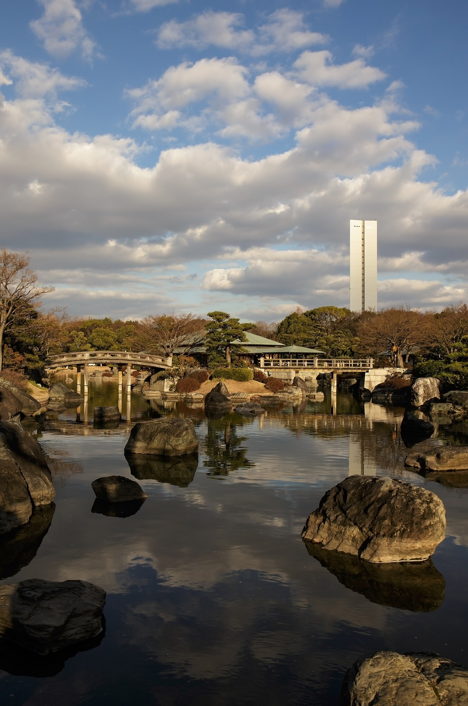
The garden pond庭園の池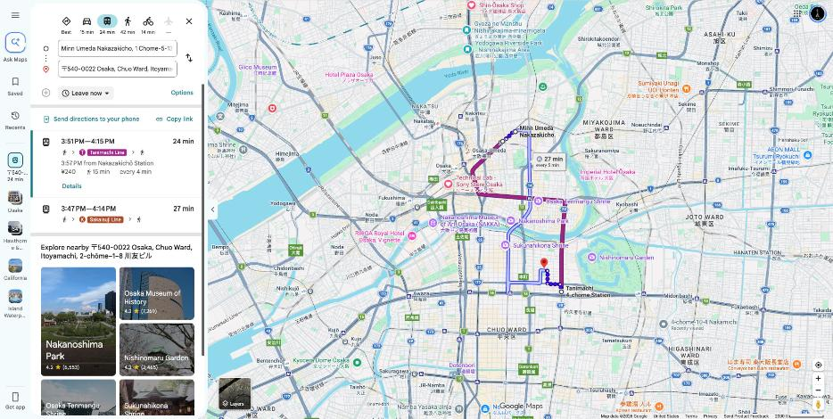
Stay 1 to Kagaen宿1→華雅苑 24 min24分Routeルート 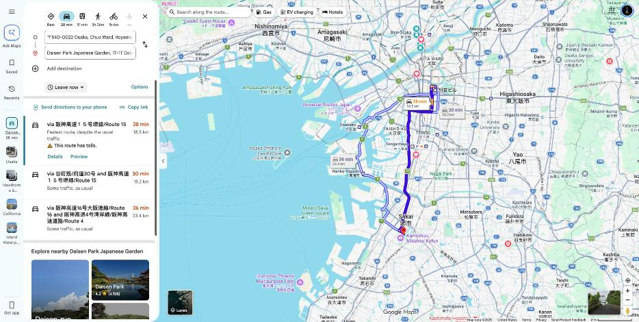
Kagaen to garden, by car華雅苑→庭園(車) 28 min28分Routeルート After the noon photo shoot: all four parents travel to Umeda together (before lunch)12:00の撮影終了後(ランチの前): 両家の両親4人で梅田へ移動
- Option 1: taxi to Mikunigaoka Station (~10 min), direct train to Osaka Station (~30 min), 10 min walk方法1:タクシーで三国ヶ丘駅へ(約10分)、大阪駅まで直通電車(約30分)、徒歩10分
- Option 2: taxi all the way (~30 min)方法2:タクシーでそのまま(約30分)
16MON月
Lunch: 梅田ちょうつがひ Choutsugaiランチ: 梅田ちょうつがひ
Booked. 28th floor, Hankyu Grand Building. 1:30 to 3:00 PM予約済み。阪急グランドビル28階。13:30〜15:00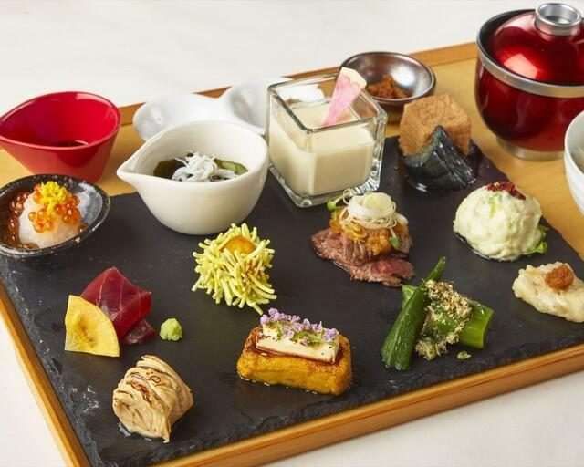
¥3,500 course (about $22)3,500円のコース(約22ドル)
IMPORTANT重要- Room must be empty by 3:00 PM.15:00までにお部屋を空ける。
- No oysters. Jay, Hikaru and Jay's parents all skip them. Tell the restaurant.牡蠣は抜き。Jay、Hikaru、Jay のご両親は全員食べません。お店に伝える。
17TUE火
Move day and Kyoto移動日と京都
Out of Stay 1, into Stay 2宿1を出て宿2へ
Scheduleスケジュール
- by 10 AM10:00まで Check out of Stay 1宿1をチェックアウト
- Day日中 Kyoto with Hikaru (plan not set)Hikaruと京都(計画は未定)
- 4:00 PM16:00 Check in at Stay 2宿2にチェックイン
IMPORTANT重要- Stay 2 opens 4:00 PM, you leave Stay 1 at 10 AM. About 6 hours with bags. Use coin lockers at the station.宿2は16:00から、宿1は10:00に出るので荷物を持って約6時間。駅のコインロッカーを利用。
- Hikaru's father travels back to Ehime today.Hikaruのお父様はこの日愛媛へ戻る。
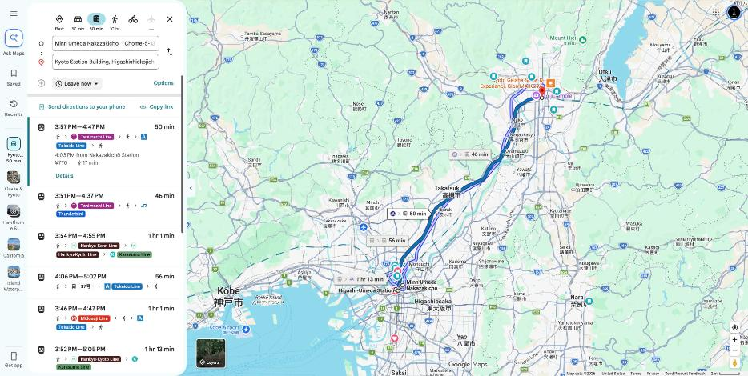
Stay 1 to Kyoto Station宿1→京都駅 50 min50分 about ¥770 to ¥790 ($5)約770〜790円(5ドル)Open routeルートを開く 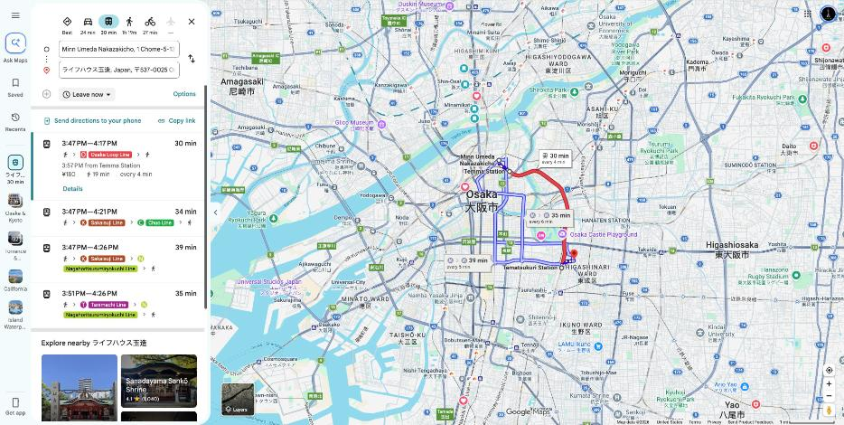
Stay 1 to Stay 2 (Tamatsukuri)宿1→宿2(玉造) 30 min30分 Loop Line, ¥180環状線、180円Open routeルートを開く
2STAY宿
Stay 2: Life House Tamatsukuri宿2: ライフハウス玉造
Nov 17 to 20, check in 4:00 PM, check out 11:00 AM11/17〜20、チェックイン16:00、チェックアウト11:00Living and diningリビングとダイニング
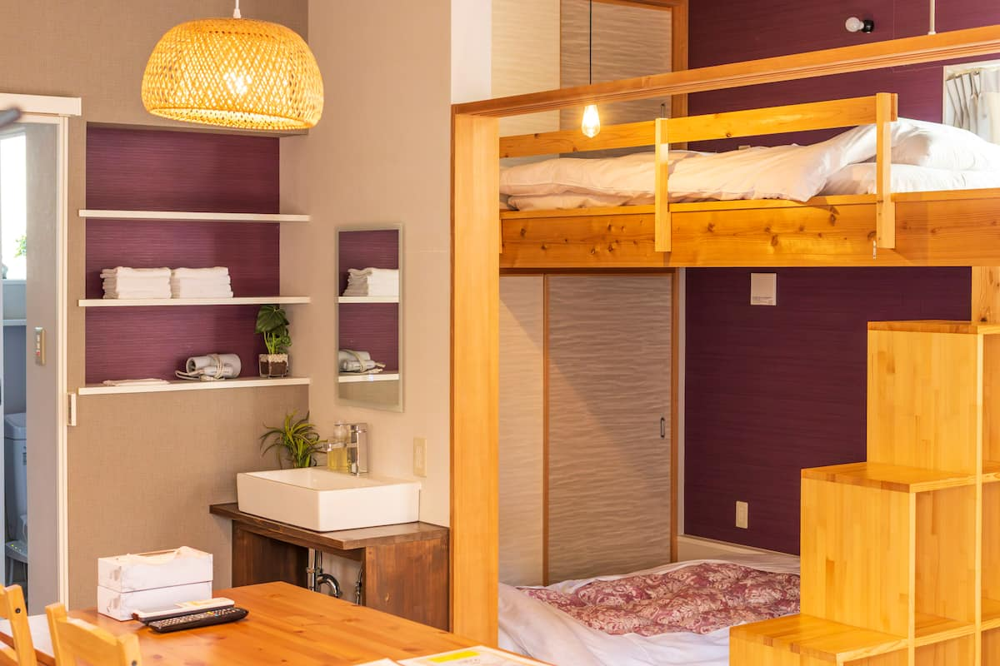
Loft bedロフトベッド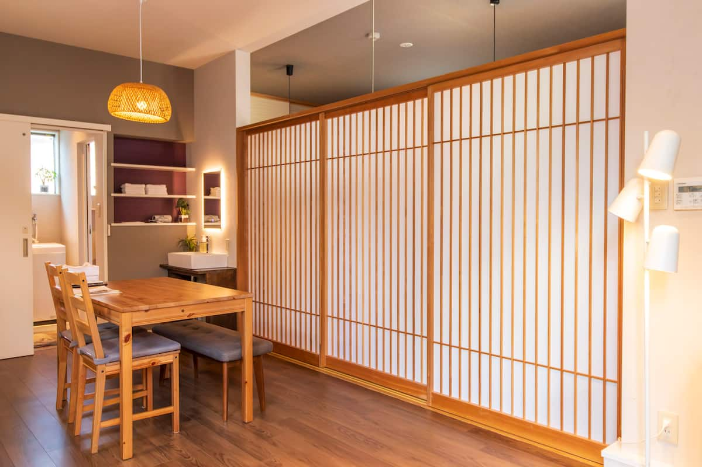
Sliding screensスライド式の間仕切り
- 4-chome-10-4 Nakamichi, Higashinari Ward, Osaka 537-0025大阪市東成区中道4-10-4 〒537-0025
- 6 to 8 min walk from JR Tamatsukuri Station, north exit. Up Tamatsukuri-suji, past the Life supermarket, onto Nakamichi. White building.JR玉造駅北口から徒歩6〜8分。玉造筋を北へ、ライフを過ぎて中道へ。白い建物。
- Self check-in, lockbox. Confirmation HMSTXWY8PXセルフチェックイン、キーボックス。確認コード HMSTXWY8PX
18WED水
Nov 18 and 19: free days11/18・19: 自由に過ごす日
Nothing booked. Nov 19 is the last full day.予定なし。11/19は最後の丸一日。20FRI金
Fly home from Itami伊丹から帰国
Itami (ITM), NOT Kansai伊丹(ITM)、関空ではありません
Scheduleスケジュール
- 11:00 AM11:00 Check out of Stay 2宿2をチェックアウト
- ~3:30 PM15:30頃 Leave for Itami: about 1 hr by train and limousine bus (¥1,040, $7)伊丹へ出発: 電車とリムジンバスで約1時間(1,040円、7ドル)
- 4:50 PM16:50 At Itami Airport伊丹空港に到着
- 5:50 PM17:50 NH036 Itami to Haneda, lands 7:05 PMNH036 伊丹→羽田、19:05着
- 9:05 PM21:05 NH126 Haneda (Terminal 2) to LAX, lands 2:05 PM same FridayNH126 羽田(ターミナル2)→LAX、同じ金曜の14:05着
IMPORTANT重要
- Itami, not Kansai. About 40 min from central Osaka.関空ではなく伊丹。大阪中心部から約40分。
- Five-hour gap after checkout. Leave bags in a coin locker or take them with you.チェックアウト後に5時間の空き。荷物はコインロッカーに預けるか持って移動。
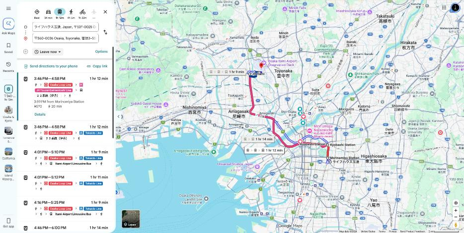
Stay 2 to Itami Airport宿2→伊丹空港 1 hr 12 min1時間12分 Loop Line + bus環状線+バスOpen routeルートを開く
Every stop, one mapすべての場所を一つの地図で
All the pinsピン一覧
| Pin場所 | When日時 | Open開く |
|---|
| Kansai Airport (KIX)関西空港(KIX) | Wed Nov 11, 4:45 PM11/11(水)16:45 | Mapsマップ |
| Stay 1宿1 Minn Umeda Nakazakicho | Nov 11 to 1711/11〜17 | Mapsマップ |
| Wedding結婚式 The 33 Sense of Wedding | Sat Nov 14, by 4:20 PM11/14(土)16:20まで | Mapsマップ |
| Kagaen華雅苑 | Mon Nov 16, 8:45 AM11/16(月)8:45 | Mapsマップ |
| Daisen Park Japanese Garden大仙公園 日本庭園 | Mon Nov 16, 11:00 AM11/16(月)11:00 | Mapsマップ |
| Lunchランチ Choutsugaiちょうつがひ | Mon Nov 16, 1:30 PM11/16(月)13:30 | Mapsマップ |
| Kyoto Station京都駅 | Tue Nov 1711/17(火) | Mapsマップ |
| Stay 2宿2 Life House Tamatsukuri | Nov 17 to 2011/17〜20 | Mapsマップ |
| Itami Airport (ITM)伊丹空港(ITM) | Fri Nov 20, by 4:50 PM11/20(金)16:50まで | Mapsマップ |